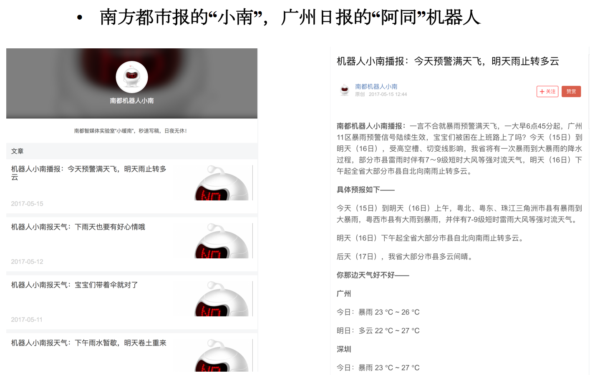
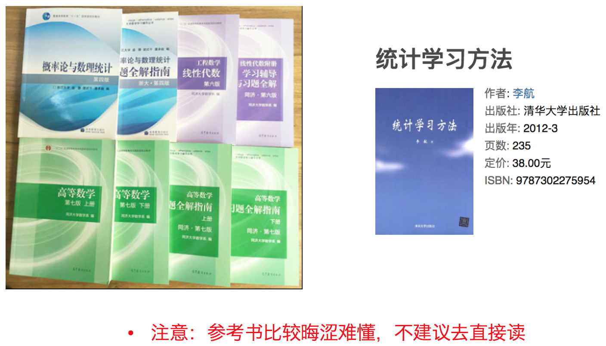

机器学习是从数据中自动分析获得模型，并利用模型对未知数据进行预测。


从历史数据当中获得规律？这些历史数据是怎么的格式？

注意：


机器学习和人工智能，深度学习的关系
机器学习是人工智能的一个实现途径
深度学习是机器学习的一个方法发展而来
达特茅斯会议-人工智能的起点
1956年8月，在美国汉诺斯小镇宁静的达特茅斯学院中，
约翰·麦卡锡（John McCarthy）
马文·闵斯基（Marvin Minsky，人工智能与认知学专家）
克劳德·香农（Claude Shannon，信息论的创始人）
艾伦·纽厄尔（Allen Newell，计算机科学家）
赫伯特·西蒙（Herbert Simon，诺贝尔经济学奖得主）等科学家正聚在一起，讨论着一个完全不食人间烟火的主题：
用机器来模仿人类学习以及其他方面的智能。
会议足足开了两个月的时间，虽然大家没有达成普遍的共识，但是却为会议讨论的内容起了一个名字：
因此，1956年也就成为了人工智能元年。
机器学习的应用场景非常多，可以说渗透到了各个行业领域当中。医疗、航空、教育、物流、电商等等领域的各种场景。

用在挖掘、预测领域：
应用场景：店铺销量预测、量化投资、广告推荐、企业客户分类、SQL语句安全检测分类…
用在图像领域：
应用场景：街道交通标志检测、人脸识别等等

用在自然语言处理领域：
应用场景：文本分类、情感分析、自动聊天、文本检测等等

当前重要的是掌握一些机器学习算法等技巧，从某个业务领域切入解决问题。

监督学习(supervised learning)（预测）
定义：输入数据是由输入特征值和目标值所组成。函数的输出可以是一个连续的值(称为回归），或是输出是有限个离散值（称作分类）。
回归：线性回归、岭回归
无监督学习(unsupervised learning)
定义：输入数据是由输入特征值所组成。


需明确几点问题：
（1）算法是核心，数据与计算是基础
（2）找准定位
大部分复杂模型的算法设计都是算法工程师在做，而我们

当前重要的是掌握一些机器学习算法等技巧，从某个业务领域切入解决问题。


说明监督学习中的分类、回归特点
说一下它们具体问题类别：
1、预测明天的气温是多少度？
2、预测明天是阴、晴还是雨？
3、人脸年龄预测？
4、人脸识别？